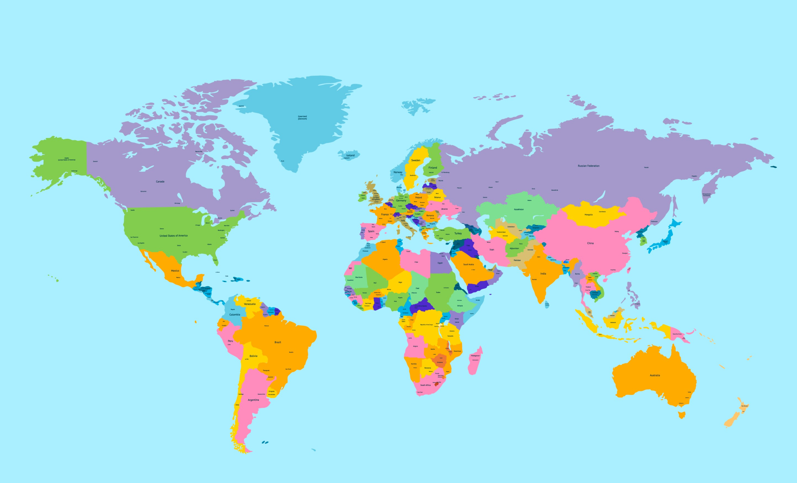

Interactive Maps
Explore migration patterns and cultural connections across continents



Legend
African Countries
Major Diaspora Communities
Cultural Centers
Ancient Kingdoms
Trade Centers
Cultural Sites
Trans-Saharan Routes
Atlantic Trade Routes
Indian Ocean Routes
Explore Diaspora Communities
Click on markers above to learn more about specific countries and their diaspora communities worldwide.
200M+
Global Diaspora
6
Continents
54
African Countries
2000+
Languages